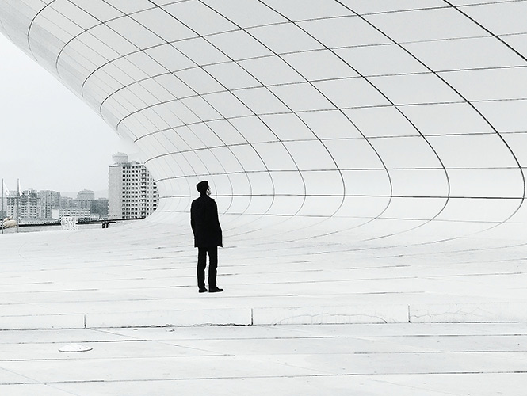

Практичная и оценочная сущность DESIGN°а
Сентябрь 201Н-го года. Офис проектного бюро "Н". 10 часов утра.
Заказ на планирование нового микрорайона. Переговоры. Молчание. Крики. Возмущение. Утверждение. Молчание. Рукопожатие.
Перед архитектором план с задачами. Появляется бюджет. Совсем небольшой ведь основная часть ушла начальнику. Появляется и срок. Мало за малым у розы-задачи вырастают колючки бытовых реалий.
Проходит полгода и проект готов. Он подвергается критике. На что-то нет денег. На что-то не хватит времени. Что-то как обычно не нравится начальнику просто снихуя и ведь не поспоришь с начальником. Что же поделать.
Проходит месяц и в ускоренном режиме правки внесены. И вроде бы уже и архитектору вид проект не очень нравится, а что поделать. Тут ведь дело тонкое. Что бы отшлифовать до идеала нужно время и ресурсы которых просто не существует. Колючки бытовых реалий все растут и уже конкретно колет жопу архитектора.
Ничего уже не поделаешь.
Смирение. Печаль. Смирение. Печаль.
Проект утвержден. Смирение. Печаль.
Проходит плюс-минус пара лет и проект реализован. Местами похоже на эскизы архитектора, местами не очень. Но проект уже реализован.
Время идёт. Архитектор все же рад за свой проект. Он работает. Идёт реклама. Люди заселяются. Строится дорога.
Архитектор горд видя живущих людей в этих домах. Кем бы они небыли.
Когда какой-то прохожий дурак сказал, что ему не нравится этот новый дом и адресовал претензию конкретно архитектору это пизда.
Мало того, что он не понимает, как на самом деле проходил этот процесс, какие были ставки, жертвы, ресурсы.
Мало того, что он не понимает вообще ничего в этом ремесле, прохожий может вообще маркетингом занимается, возможно он не дурак по части настройки директа, но в рамках оценки сущности дизайна сооружений 99/100 прохожих выступают дураками.
Несмотря на недовольства начальника, заказчика, случайного прохожего, сам архитектор видит, наверное, ещё больше неприятных недочётов этого проекта, но люди живут, детишки радуются, подростки приходят в новый район походить по пока ещё чистым улицам, бабушки восхищаются эдаким цветным фасадам и красивым табличкам на парковке.
Но, почему-то искреннее мнение архитектора услышать никогда и никому не удается.
А что в итоге?
А ничего хорошего в итоге!
Пусть в меньших масштабах, но ведь нечто подобное протекает и в веб-дизайне, проектирование интерфейсов, дизайне рекламы, брендинге и даже смм дизайне.
А между тем архитектор и не претендовал на историческую значимость. Не с мировыми архитектурными сооружениями нужно сравнить его работу.
К чему эти извращения. Будьте же благоразумны.
Ведь архитектор просто хотел творить. Создавать. Развивать. Улучшать. Хотел сделать немного лучше соседних серых девятиэтажек. Он хотел сделать хоть немного красивее предыдущего совсем провалившегося проекта. Он хотел сделать удобнее, чем его просили.
Он старался для вас.